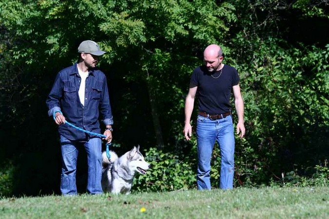
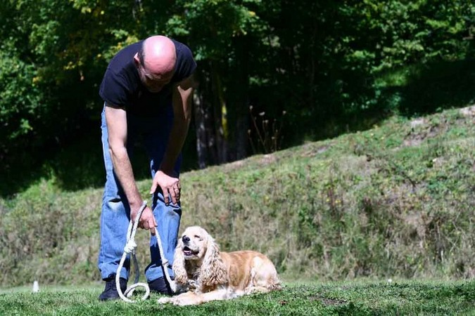
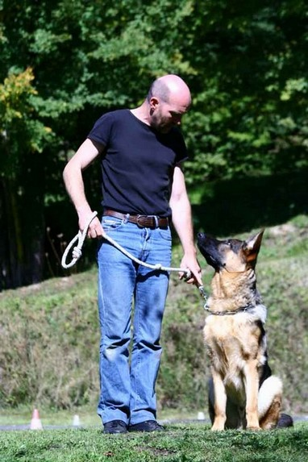

L’EDUCATION CANINE
Education canine à domicile
Cette formule permet de régler les problèmes sur le lieu de vie du chien, sans avoir à vous déplacer :
- Conseils sur les bonnes attitudes à avoir avec son compagnon afin de créer une hiérarchie au sein de la famille
et vivre en harmonie avec lui.
- Education canine de base : Marche au pied avec et sans laisse, assis, couché, assis pas bouger, et rappel
Education canine individuelle sur terrain
(Forfait de 10 leçons, éventuellement complété par 5 leçons en groupe)
Cette éducation se pratique sur un terrain privé, idéal pour les personnes n'ayant pas de jardin.
- Les premières leçons serviront au chien à apprendre les ordres de base.
- Les leçons suivantes se feront dans la rue avec traversée de rue, parking de supermarché, etc.
- Education canine de base : Marche au pied avec et sans laisse, assis, couché, assis pas bouger, et rappel
Education canine en groupe sur terrain
(Forfait de 10 leçons)
- Cette éducation permet d'apprendre à contrôler son compagnon malgré la source d'attention que crée les
autres chiens autour de lui.
- Education canine de base : Marche au pied avec et sans laisse, assis, couché, assis pas bouger, et rappel
INSCRIPTION
Quelle que soit la formule désirée, un premier rendez-vous est indispensable. Celui-ci est entièrement GRATUIT
et SANS ENGAGEMENT. Il vous suffit de me contacter
Les leçons d'éducation de groupe se déroulent le Dimanche matin, de 9h00 à 10h00 et de 10h30 à 11h30. L'inscription doit être faite 48h au préalable et un maximum de 7 chiens est accepté par séance.
N'hésitez pas à me contacter si vous souhaitez davantage d'informations.


